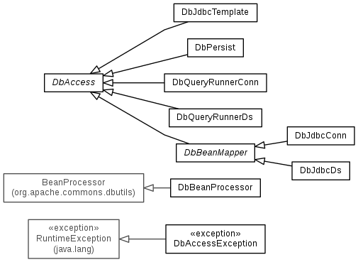
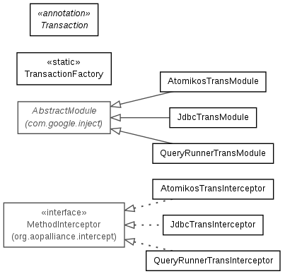

Project Goals
DB Access is a database abstraction layer that prevents coding to a specific implementation such as Apache DBUtils or Spring JdbcTemplate. This allows you to swap out the implementation as needed without impacting dependant code. DB Access has the following features:
- Common API currently supporting Apache DbUtils (DataSource and Connection based), Spring JdbcTemplate, Persist and a home grown extension of the DbAccess abstract class (DataSource and Connection based). Implementations can be easily added by extending the DbAccess abstract class and writing the implementation.
- Minimal overhead is added compared to direct JDBC code or direct use of underlying implementations. Even named parameters add almost no overhead.
- All implementations automatically support named parameters without using a wrapped implementation like NamedParameterJdbcTemplate. DbAccess expects parameter markers for Object[] parameters and named parameters for Map<String, Object> parameters. You pick the strategy that best suits your application. For batch operations Object[][] expects parameter markers and List<Map<String, Object>> expects named parameters.
- No explicit ORM mappings are required since DB Access follows simple field level mapping rules. Database field names with underscores are converted to camelCase and mapped to bean fields. Of course you have the choice of returning a List of beans or List<Map<String, Object>> which can be easily rendered as a JSON object. The DbUtils implementation adds a BeanProcessor which allows DbUtils to handle mapping the same way.
- Method level transactions can be added with a simple @Transaction annotation. This includes thread based transactions using a DataSource or Connection and XA data sources. Ultra fast connection based transactions can also be substituted by simply selecting a different transaction module from TransactionFactory.
- For JDBC drivers that support RETURN_GENERATED_KEYS all implementations automatically support returning keys with updateReturnKeys or returning a single key value with updateReturnKey.
Packaging
DB Access is is divided into to two namespaces. One covers all the basic JDBC functionality and the other transactions.
- The Common API and wrapped classes are in com.codeferm.dbaccess. Note that the DbAccess abstract class is the center of the universe.

- The AOP/annotation based transaction classes are in com.codeferm.dbaccess.transaction.

Technologies utilized
- The compile time dependencies are minimal usually requiring one jar per implementation other than Spring which requires three for JdbcTemplate. Currently Spring's NamedParameterUtils is also used for named parameter processing, but this may be changed in the future since NamedParameterUtils is not a real SQL parser. Guice and AOP Alliance are used for adding @Transaction annotation. If you are using the DB Access snapshot jar just exclude the Maven dependencies and test dependencies that you are not using for your project.
- Atomikos TransactionsEssentials® is used for thread based JTA/XA transactions. This is handy because using a DataSource cannot guarantee the same connection is used throughout a transactional process. The drawback is that it does add considerable overhead.
- Google Guice and AOP are leveraged to allow annotation based transactions. If you have ever used Spring's declarative or programmatic transaction facilities you will find @Transaction very refreshing. Spring's declarative XML configuration is a code smell and Spring's programmatic transactions tightly couples your code to Spring.
- JUnit tests cover usage scenarios.